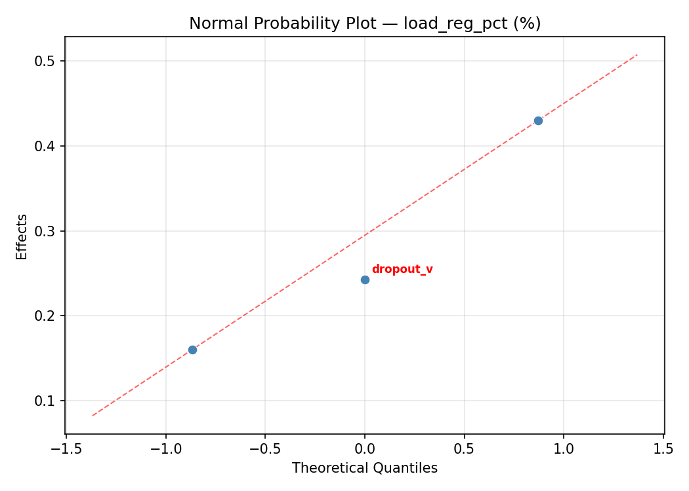
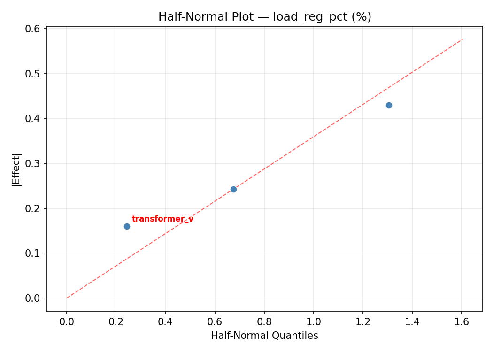
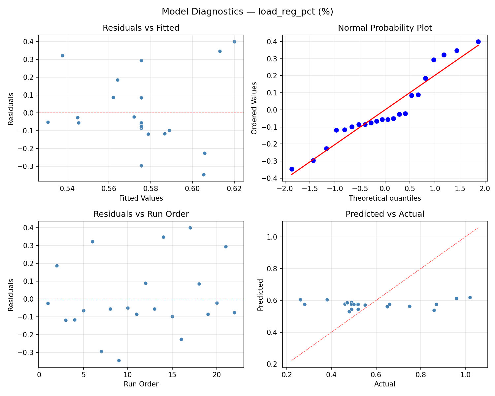
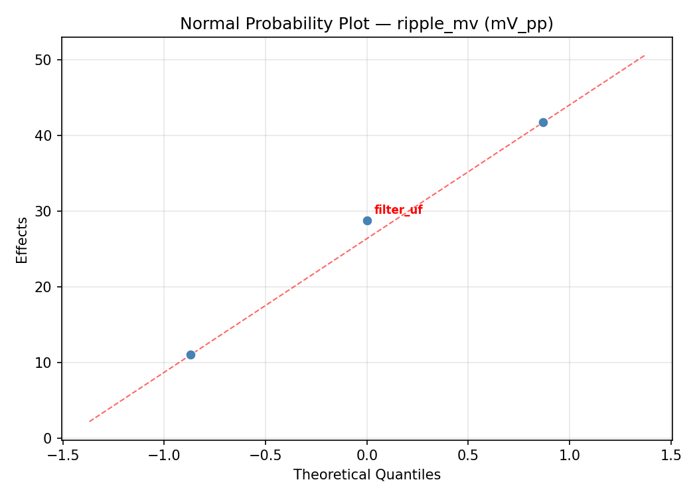
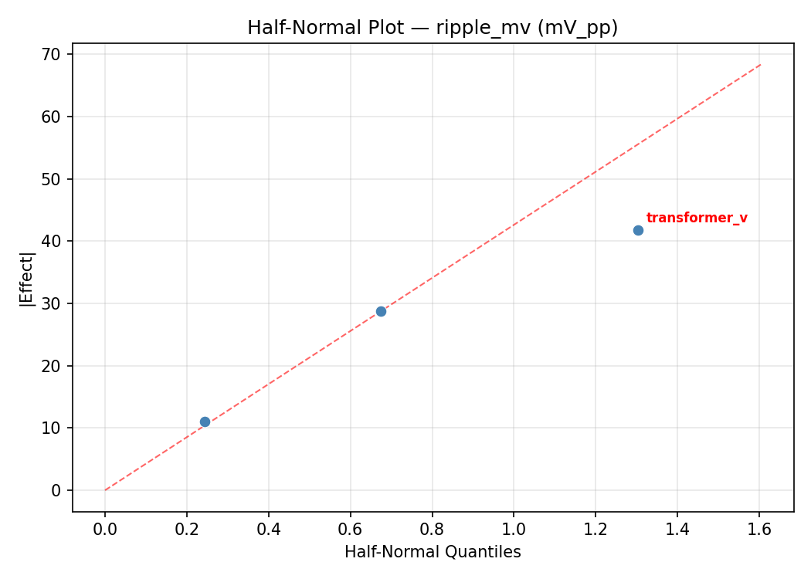
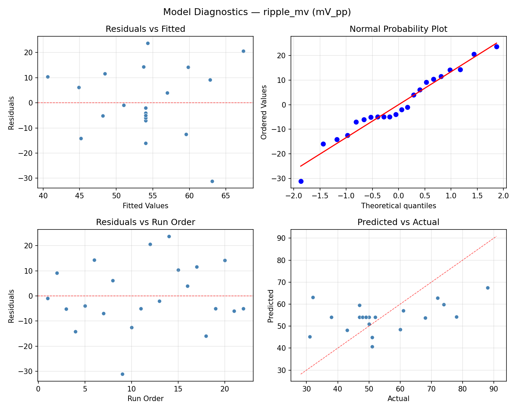

Summary
This experiment investigates linear power supply regulation. Central composite design to maximize load regulation and minimize ripple by tuning transformer tap, filter capacitance, and regulator dropout.
The design varies 3 factors: transformer v (V), ranging from 12 to 24, filter uf (uF), ranging from 1000 to 10000, and dropout v (V), ranging from 1 to 4. The goal is to optimize 2 responses: load reg pct (%) (minimize) and ripple mv (mV_pp) (minimize). Fixed conditions held constant across all runs include regulator = LM317, output = 12V.
A Central Composite Design (CCD) was selected to fit a full quadratic response surface model, including curvature and interaction effects. With 3 factors this produces 22 runs including center points and axial (star) points that extend beyond the factorial range.
Quadratic response surface models were fitted to capture potential curvature and factor interactions. The RSM contour plots below visualize how pairs of factors jointly affect each response.
Key Findings
For load reg pct, the most influential factors were transformer v (49.6%), dropout v (34.1%), filter uf (16.3%). The best observed value was 0.26 (at transformer v = 24, filter uf = 1000, dropout v = 1).
For ripple mv, the most influential factors were transformer v (50.7%), filter uf (31.6%), dropout v (17.8%). The best observed value was 31.0 (at transformer v = 12, filter uf = 1000, dropout v = 4).
Recommended Next Steps
- Run confirmation experiments at the predicted optimal settings to validate the model.
- Consider whether any fixed factors should be varied in a future study.
Experimental Setup
Factors
| Factor | Low | High | Unit |
|---|
transformer_v | 12 | 24 | V |
filter_uf | 1000 | 10000 | uF |
dropout_v | 1 | 4 | V |
Fixed: regulator = LM317, output = 12V
Responses
| Response | Direction | Unit |
|---|
load_reg_pct | ↓ minimize | % |
ripple_mv | ↓ minimize | mV_pp |
Configuration
{
"metadata": {
"name": "Linear Power Supply Regulation",
"description": "Central composite design to maximize load regulation and minimize ripple by tuning transformer tap, filter capacitance, and regulator dropout"
},
"factors": [
{
"name": "transformer_v",
"levels": [
"12",
"24"
],
"type": "continuous",
"unit": "V"
},
{
"name": "filter_uf",
"levels": [
"1000",
"10000"
],
"type": "continuous",
"unit": "uF"
},
{
"name": "dropout_v",
"levels": [
"1",
"4"
],
"type": "continuous",
"unit": "V"
}
],
"fixed_factors": {
"regulator": "LM317",
"output": "12V"
},
"responses": [
{
"name": "load_reg_pct",
"optimize": "minimize",
"unit": "%"
},
{
"name": "ripple_mv",
"optimize": "minimize",
"unit": "mV_pp"
}
],
"settings": {
"operation": "central_composite",
"test_script": "use_cases/280_power_supply_design/sim.sh"
}
}
Experimental Matrix
The Central Composite Design produces 22 runs. Each row is one experiment with specific factor settings.
| Run | transformer_v | filter_uf | dropout_v |
|---|
| 1 | 18 | 5500 | 2.5 |
| 2 | 24 | 1000 | 4 |
| 3 | 12 | 10000 | 1 |
| 4 | 18 | 13715.8 | 2.5 |
| 5 | 18 | 5500 | 2.5 |
| 6 | 7.04555 | 5500 | 2.5 |
| 7 | 18 | 5500 | -0.238613 |
| 8 | 18 | 5500 | 2.5 |
| 9 | 24 | 10000 | 1 |
| 10 | 28.9545 | 5500 | 2.5 |
| 11 | 18 | 5500 | 2.5 |
| 12 | 18 | -2715.84 | 2.5 |
| 13 | 18 | 5500 | 2.5 |
| 14 | 12 | 1000 | 4 |
| 15 | 18 | 5500 | 2.5 |
| 16 | 24 | 1000 | 1 |
| 17 | 18 | 5500 | 5.23861 |
| 18 | 24 | 10000 | 4 |
| 19 | 18 | 5500 | 2.5 |
| 20 | 12 | 1000 | 1 |
| 21 | 12 | 10000 | 4 |
| 22 | 18 | 5500 | 2.5 |
Step-by-Step Workflow
1
Preview the design
$ python doe.py info --config use_cases/280_power_supply_design/config.json
2
Generate the runner script
$ python doe.py generate --config use_cases/280_power_supply_design/config.json \
--output use_cases/280_power_supply_design/results/run.sh --seed 42
3
Execute the experiments
$ bash use_cases/280_power_supply_design/results/run.sh
4
Analyze results
$ python doe.py analyze --config use_cases/280_power_supply_design/config.json
5
Get optimization recommendations
$ python doe.py optimize --config use_cases/280_power_supply_design/config.json
6
Multi-objective optimization
With 2 competing responses, use --multi to find the best compromise via Derringer–Suich desirability.
$ python doe.py optimize --config use_cases/280_power_supply_design/config.json --multi
7
Generate the HTML report
$ python doe.py report --config use_cases/280_power_supply_design/config.json \
--output use_cases/280_power_supply_design/results/report.html
Features Exercised
| Feature | Value |
|---|
| Design type | central_composite |
| Factor types | continuous (all 3) |
| Arg style | double-dash |
| Responses | 2 (load_reg_pct ↓, ripple_mv ↓) |
| Total runs | 22 |
Analysis Results
Generated from actual experiment runs using the DOE Helper Tool.
Response: load_reg_pct
Top factors: transformer_v (49.6%), dropout_v (34.1%), filter_uf (16.3%).
ANOVA
| Source | DF | SS | MS | F | p-value |
|---|
| Source | DF | SS | MS | F | p-value |
| transformer_v | 4 | 0.4192 | 0.1048 | 3.589 | 0.0515 |
| filter_uf | 4 | 0.0766 | 0.0191 | 0.656 | 0.6377 |
| dropout_v | 4 | 0.1422 | 0.0356 | 1.218 | 0.3684 |
| Lack | of | Fit | 2 | 0.0186 | 0.0093 |
| Pure | Error | 7 | 0.2044 | | |
| Error | 9 | 0.2230 | 0.0292 | | |
| Total | 21 | 0.8609 | 0.0410 | | |
Pareto Chart

Main Effects Plot

Normal Probability Plot of Effects

Half-Normal Plot of Effects

Model Diagnostics

Response: ripple_mv
Top factors: transformer_v (50.7%), filter_uf (31.6%), dropout_v (17.8%).
ANOVA
| Source | DF | SS | MS | F | p-value |
|---|
| Source | DF | SS | MS | F | p-value |
| transformer_v | 4 | 849.0000 | 212.2500 | 1.249 | 0.3575 |
| filter_uf | 4 | 318.2500 | 79.5625 | 0.468 | 0.7583 |
| dropout_v | 4 | 171.0833 | 42.7708 | 0.252 | 0.9015 |
| Lack | of | Fit | 2 | 1861.6667 | 930.8333 |
| Pure | Error | 7 | 1190.0000 | | |
| Error | 9 | 3051.6667 | 170.0000 | | |
| Total | 21 | 4390.0000 | 209.0476 | | |
Pareto Chart

Main Effects Plot

Normal Probability Plot of Effects

Half-Normal Plot of Effects

Model Diagnostics

Response Surface Plots
3D surfaces fitted with quadratic RSM. Red dots are observed data points.
load reg pct filter uf vs dropout v

load reg pct transformer v vs dropout v

load reg pct transformer v vs filter uf

ripple mv filter uf vs dropout v

ripple mv transformer v vs dropout v

ripple mv transformer v vs filter uf

Multi-Objective Optimization
When responses compete, Derringer–Suich desirability finds the best compromise.
Each response is scaled to a 0–1 desirability, then combined via a weighted geometric mean.
Overall Desirability
D = 0.9481
Per-Response Desirability
| Response | Weight | Desirability | Predicted | Dir |
|---|
load_reg_pct |
1.5 |
|
0.26 0.9545 0.26 % |
↓ |
ripple_mv |
1.0 |
|
32.00 0.9386 32.00 mV_pp |
↓ |
Recommended Settings
| Factor | Value |
|---|
transformer_v | 12 V |
filter_uf | 10000 uF |
dropout_v | 1 V |
Source: from observed run #9
Trade-off Summary
Sacrifice = how much worse than single-objective best.
| Response | Predicted | Best Observed | Sacrifice |
|---|
ripple_mv | 32.00 | 31.00 | +1.00 |
Top 3 Runs by Desirability
| Run | D | Factor Settings |
|---|
| #7 | 0.8301 | transformer_v=18, filter_uf=5500, dropout_v=5.23861 |
| #4 | 0.7947 | transformer_v=18, filter_uf=5500, dropout_v=2.5 |
Model Quality
| Response | R² | Type |
|---|
ripple_mv | 0.4076 | quadratic |
Full Multi-Objective Output
============================================================
MULTI-OBJECTIVE OPTIMIZATION
Method: Derringer-Suich Desirability Function
============================================================
Overall desirability: D = 0.9481
Response Weight Desirability Predicted Direction
---------------------------------------------------------------------
load_reg_pct 1.5 0.9545 0.26 % ↓
ripple_mv 1.0 0.9386 32.00 mV_pp ↓
Recommended settings:
transformer_v = 12 V
filter_uf = 10000 uF
dropout_v = 1 V
(from observed run #9)
Trade-off summary:
load_reg_pct: 0.26 (best observed: 0.26, sacrifice: +0.00)
ripple_mv: 32.00 (best observed: 31.00, sacrifice: +1.00)
Model quality:
load_reg_pct: R² = 0.6169 (quadratic)
ripple_mv: R² = 0.4076 (quadratic)
Top 3 observed runs by overall desirability:
1. Run #9 (D=0.9481): transformer_v=12, filter_uf=10000, dropout_v=1
2. Run #7 (D=0.8301): transformer_v=18, filter_uf=5500, dropout_v=5.23861
3. Run #4 (D=0.7947): transformer_v=18, filter_uf=5500, dropout_v=2.5
Full Analysis Output
=== Main Effects: load_reg_pct ===
Factor Effect Std Error % Contribution
--------------------------------------------------------------
transformer_v 0.5700 0.0432 49.6%
dropout_v 0.3925 0.0432 34.1%
filter_uf 0.1875 0.0432 16.3%
=== ANOVA Table: load_reg_pct ===
Source DF SS MS F p-value
-----------------------------------------------------------------------------
transformer_v 4 0.4192 0.1048 3.589 0.0515
filter_uf 4 0.0766 0.0191 0.656 0.6377
dropout_v 4 0.1422 0.0356 1.218 0.3684
Lack of Fit 2 0.0186 0.0093 0.319 0.7372
Pure Error 7 0.2044 0.0292
Error 9 0.2230 0.0292
Total 21 0.8609 0.0410
=== Summary Statistics: load_reg_pct ===
transformer_v:
Level N Mean Std Min Max
------------------------------------------------------------
12 4 0.5825 0.1417 0.4600 0.7500
18 12 0.5458 0.1765 0.2600 0.8700
24 4 0.4500 0.1140 0.2800 0.5200
28.9545 1 1.0200 0.0000 1.0200 1.0200
7.04555 1 0.9600 0.0000 0.9600 0.9600
filter_uf:
Level N Mean Std Min Max
------------------------------------------------------------
-2715.84 1 0.4900 0.0000 0.4900 0.4900
1000 4 0.4725 0.1515 0.2800 0.6500
10000 4 0.5600 0.1294 0.4600 0.7500
13715.8 1 0.6600 0.0000 0.6600 0.6600
5500 12 0.6150 0.2459 0.2600 1.0200
dropout_v:
Level N Mean Std Min Max
------------------------------------------------------------
-0.238613 1 0.8700 0.0000 0.8700 0.8700
1 4 0.5550 0.1310 0.4700 0.7500
2.5 12 0.5983 0.2328 0.2600 1.0200
4 4 0.4775 0.1537 0.2800 0.6500
5.23861 1 0.4800 0.0000 0.4800 0.4800
=== Main Effects: ripple_mv ===
Factor Effect Std Error % Contribution
--------------------------------------------------------------
transformer_v 28.5000 3.0826 50.7%
filter_uf 17.7500 3.0826 31.6%
dropout_v 10.0000 3.0826 17.8%
=== ANOVA Table: ripple_mv ===
Source DF SS MS F p-value
-----------------------------------------------------------------------------
transformer_v 4 849.0000 212.2500 1.249 0.3575
filter_uf 4 318.2500 79.5625 0.468 0.7583
dropout_v 4 171.0833 42.7708 0.252 0.9015
Lack of Fit 2 1861.6667 930.8333 5.475 0.0370
Pure Error 7 1190.0000 170.0000
Error 9 3051.6667 170.0000
Total 21 4390.0000 209.0476
=== Summary Statistics: ripple_mv ===
transformer_v:
Level N Mean Std Min Max
------------------------------------------------------------
12 4 58.5000 26.1343 31.0000 88.0000
18 12 51.5000 11.6111 32.0000 74.0000
24 4 49.5000 1.7321 47.0000 51.0000
28.9545 1 60.0000 0.0000 60.0000 60.0000
7.04555 1 78.0000 0.0000 78.0000 78.0000
filter_uf:
Level N Mean Std Min Max
------------------------------------------------------------
-2715.84 1 49.0000 0.0000 49.0000 49.0000
1000 4 54.2500 24.1022 31.0000 88.0000
10000 4 53.7500 12.6062 43.0000 72.0000
13715.8 1 38.0000 0.0000 38.0000 38.0000
5500 12 55.7500 12.9764 32.0000 78.0000
dropout_v:
Level N Mean Std Min Max
------------------------------------------------------------
-0.238613 1 48.0000 0.0000 48.0000 48.0000
1 4 51.0000 16.7531 31.0000 72.0000
2.5 12 55.0833 13.7210 32.0000 78.0000
4 4 57.0000 20.8646 43.0000 88.0000
5.23861 1 47.0000 0.0000 47.0000 47.0000
Optimization Recommendations
=== Optimization: load_reg_pct ===
Direction: minimize
Best observed run: #9
transformer_v = 24
filter_uf = 1000
dropout_v = 1
Value: 0.26
RSM Model (linear, R² = 0.0106, Adj R² = -0.1543):
Coefficients:
intercept +0.5755
transformer_v +0.0058
filter_uf -0.0207
dropout_v +0.0126
RSM Model (quadratic, R² = 0.1892, Adj R² = -0.4189):
Coefficients:
intercept +0.6183
transformer_v +0.0058
filter_uf -0.0207
dropout_v +0.0126
transformer_v*filter_uf +0.0800
transformer_v*dropout_v -0.0200
filter_uf*dropout_v -0.0650
transformer_v^2 -0.0189
filter_uf^2 +0.0081
dropout_v^2 -0.0534
Curvature analysis:
dropout_v coef=-0.0534 negligible curvature
transformer_v coef=-0.0189 negligible curvature
filter_uf coef=+0.0081 negligible curvature
Predicted optimum (from linear model, at observed points):
transformer_v = 24
filter_uf = 1000
dropout_v = 4
Predicted value: 0.6146
Surface optimum (via L-BFGS-B, linear model):
transformer_v = 12
filter_uf = 10000
dropout_v = 1
Predicted value: 0.5363
Model quality: Weak fit — consider adding center points or using a different design.
Factor importance:
1. filter_uf (effect: 0.4, contribution: 45.4%)
2. transformer_v (effect: 0.3, contribution: 35.9%)
3. dropout_v (effect: 0.2, contribution: 18.8%)
=== Optimization: ripple_mv ===
Direction: minimize
Best observed run: #4
transformer_v = 12
filter_uf = 1000
dropout_v = 4
Value: 31.0
RSM Model (linear, R² = 0.0804, Adj R² = -0.0728):
Coefficients:
intercept +54.0000
transformer_v +1.7495
filter_uf +4.3274
dropout_v +1.5119
RSM Model (quadratic, R² = 0.3003, Adj R² = -0.2245):
Coefficients:
intercept +53.7369
transformer_v +1.7495
filter_uf +4.3275
dropout_v +1.5119
transformer_v*filter_uf -2.5000
transformer_v*dropout_v +6.5000
filter_uf*dropout_v -7.0000
transformer_v^2 +1.3816
filter_uf^2 +1.2316
dropout_v^2 -2.2184
Curvature analysis:
dropout_v coef=-2.2184 concave (has a maximum)
transformer_v coef=+1.3816 convex (has a minimum)
filter_uf coef=+1.2316 convex (has a minimum)
Notable interactions:
filter_uf*dropout_v coef=-7.0000 (antagonistic)
transformer_v*dropout_v coef=+6.5000 (synergistic)
transformer_v*filter_uf coef=-2.5000 (antagonistic)
Predicted optimum (from linear model, at observed points):
transformer_v = 18
filter_uf = 13715.8
dropout_v = 2.5
Predicted value: 61.9008
Surface optimum (via L-BFGS-B, linear model):
transformer_v = 12
filter_uf = 1000
dropout_v = 1
Predicted value: 46.4112
Model quality: Weak fit — consider adding center points or using a different design.
Factor importance:
1. transformer_v (effect: 28.5, contribution: 45.7%)
2. filter_uf (effect: 26.0, contribution: 41.7%)
3. dropout_v (effect: 7.9, contribution: 12.7%)